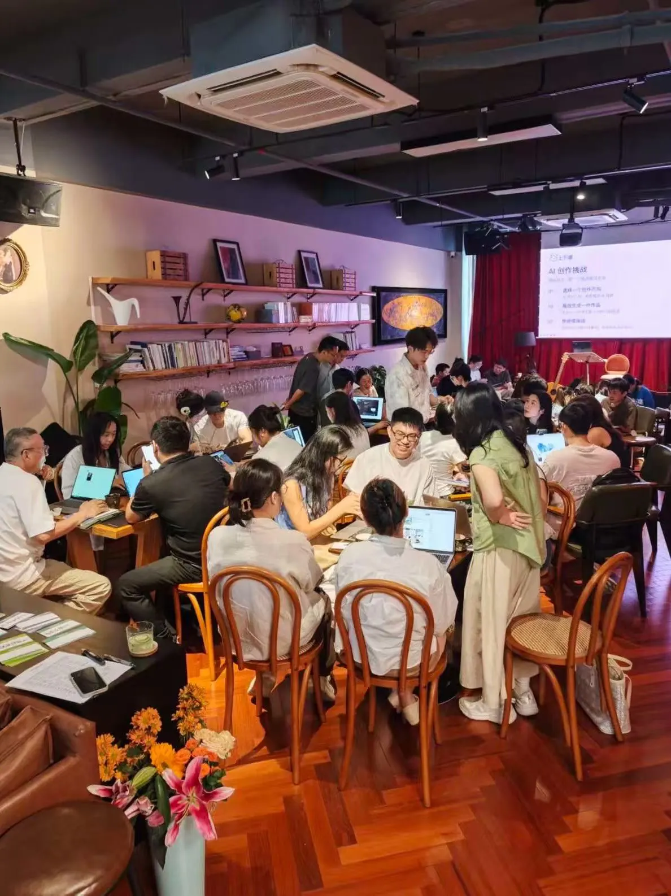

AIGC 共创局：从主题分享走向围桌实战
大家带着自己的想法和电脑，在现场拆解电商广告生成、AI 短剧分镜制作与跨行业 Agent 落地场景，4–5 人小队现场完成共创挑战。
渐进展开：查看第二期的 4 个核心环节详情
- 01｜AIGC 实战分享来自 TikTok 的 AI 生图与视频生成专家，带大家通俗理解大语言模型、AI 图片与视频生成原理；从一张商品图和 Prompt 生成不同风格的电商广告，拆解 AI 短剧的故事、角色、分镜与视频创作，并交流工具选择和踩坑经验。
- 02｜跨行业交流聊 AI Agent、AIGC 与产品落地，也交流 AI 在电商、制造、教育和内容创作中的应用；连接技术伙伴、业务场景、项目合作与创业资源，也认识不同背景的新朋友。
- 03｜AI 创意挑战赛4–5 人组成创意小队，可选 AI 广告海报、脑洞短剧或 AI 行业创新主题，用 AI 工具共同完成一份作品并派代表展示。零基础也能参与，不比技术，更重共创与交流。
- 04｜自由交流留出小组讨论、互动提问和资源交流的时间，让懂技术的人遇见真实场景，让有想法的人找到伙伴。
渐进展开：浏览另外 3 张现场高清照片